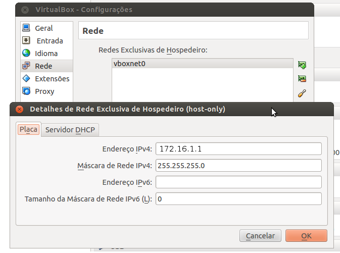
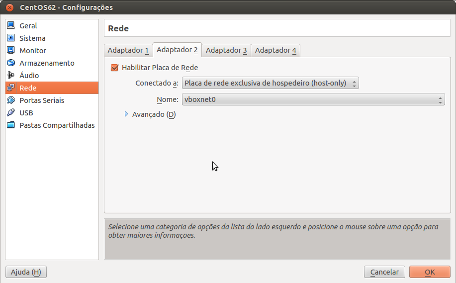
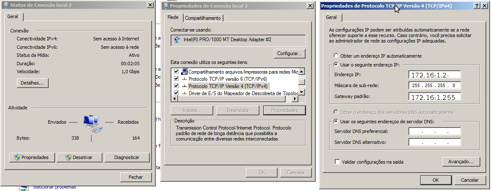

VirtualBox: Creating an internal network between host and VMs with static ips
Well, virtual machine configurations are not directly related to programming, but often virtual machines are useful for testing some situations as was my case, I had to simulate a database cluster.
Scenario: I have a postgres server installed in my native OS (Ubuntu 12.04) and wanted to test data replication in a cluster with other 2 machines. In case, I used VirtualBox to create two virtual machines: one with Windows 7 and one with CentOS 6.2. The basic requirement for replication to work before any setting in the database is that the machines connect to each other on the network, that’s where this post.
When I decided to implement this environment researched enough to try to find the best way and it was not as easy as I thought it would be (perhaps because I had never used VirtualBox for nothing). If you try to search Google on how to prepare a similar environment, many blogs, forums and etc, suggest that you configure the VM with a network card in bridge mode, the problem is that this way whenever I need to call the virtual machines and there is no a real network that I can receive an IP the environment would crash, ie could only use the VM’s if indeed exists any real network.
After much searching, I found that post(pt-br) of Rafael Biriba that explains exactly how to create a network between VMs and host, assigning static ip and with the VMs accessing the internet. Perfect!
And because I to write another post then? Yes, the post of Rafael makes some implicit things, and as I had never used VirtualBox, still had to give poke around, then it’ll just detail what he says. Lets go to what matters!
1 - Set up a host-only network: Open VirtualBox (I’m using 4.1.12) and go to File > Preferences > Network and add a host-only network on your VirtualBox as shown in image below:

The “IPv4 Address” is the IP that your OS host will receive the network interface vboxnet0 (for Windows the name of the network interface may change) every time you open your VirtualBox in my case, I used the ip 172.16.1.1. An important point is that the DHCP server of this host-only network should be Disabled, which will help us assign the IP’s further static.
2 - Configure the network interfaces in VMs: Select your VM and click on Settings > Network and configure two network interfaces as shown in the images below. The first interface to be the NAT type and it is she who will ensure internet access for the SO’s guests and the second must be host-only type, it is through her that the VMs and the host will communicate. In host-only interface you must select the interface that we configured in step 1 for all VMs that you want to put on the same network.

3 - Assign static ip’s on the VM’s: At this point, the host OS already has a network interface, which in this case was configured with the ip 172.16.1.1. This IP will not change (unless you do it manually), missing only we configure the static ip’s in VM’s.
In the case of my Windows VM the Local Network Connection 1 represents the NAT interface and the same should get an IP via DHCP (which is already the default behavior), since the Local Network Connection 2 is the host-only interface and it should be modified to receive an IP statically as below:

My VM CentOS got the network interface eth0 and the NAT network interface, just like in Windows machine it should receive an IP via DHCP. The eth1 interface is equivalent to host-only network and you must assign a different IP statically, below my settings:

4 - Additional details
It is not the scope of this post describing how to install additional ones for guests (VirtualBoxGuestAdditions) but it is important that you install this tool on your virtual machines.
I had problems in both Windows and CentOS as regards communication due to firewall blocks, so if you have a problem make sure that is not it.
In CentOS, NAT interface was first recognized, however, the host-only interface was only recognized when I installed NetworkManager.
Well, with that you can now connect in your VM’s or your VM’s to connect to the host, to check this, a simple test is ping between machines.
I am the way, the truth and the life. No one comes to the Father except through me.
Jesus Christ